POCKETD-D · USB
Il tuo eroe, sul dispositivo.
Collega il Pocket via USB e aggiorna da questa pagina. Firmware e look sulla SD si installano dal browser: nessuno ZIP da scaricare.
Importazione Beyond e strumenti PC
Per importare un PG da Beyond serve ancora il connettore locale. Se lo hai già, non occorre scaricarlo di nuovo per ogni aggiornamento del firmware.
- Scarica ed estrai il pacchetto Windows solo quando ti serve.
- Apri Avvia-PocketDD.cmd.
- Segui la guida: Pocket → Personaggio → Al tavolo.
Windows x64 · Chrome o Edge. App, firmware e Node.js sono inclusi. Non servono installazioni separate di strumenti.
Se il Pocket è già pronto, salti il firmware. Puoi preparare il PG anche senza dispositivo e inviarlo più tardi.
Guida rapida · Funzioni e prove ancora aperte. Prima importazione PG riferita riuscita; SD via USB, riavvio e backup fisici ancora da verificare.
2 · Installa i look sulla SD
504 look con abiti e armi distinti. Lascia la microSD FAT32 nel Pocket: il browser copia e verifica i file via USB.
Dettagli USB della SD
Richiede firmware 0.83. PG, progressi e altri file della SD restano conservati. Dopo l’installazione scegli la Classe sul Pocket. Guida SD via USB.
Installazione manuale con lettore PC
Scarica il pacchetto SDCopia pocketdd nella radice di una SD FAT32 e inseriscila a dispositivo spento.
1 · Installa o aggiorna
Firmware- Apri in Chrome o Edge su PC.
- Collega la scheda con un cavo USB dati.
- Premi Installa, scegli la porta e attendi la verifica.
Il chip viene controllato automaticamente; la revisione della scheda va verificata sull’hardware. Chiudi altri programmi che usano la porta USB.
Preparo il firmware…
Attacco normale o magia, subito · v0.87
Attacca apre la scelta fra attacco normale e varianti con arma: icone, caratteristica, bonus e danni visibili. Se non ci sono varianti, si va direttamente al tiro. Preparazione nel flusso e motivi dei blocchi visibili; si cambia modalità anche dal pulsante Varianti.
True Strike 2024 usa la caratteristica della sua origine, per tutti i PG. Le altre magie e proprietà non rappresentate restano manuali: nessun effetto assegnato dal solo nome. Il menu non tira dadi né consuma slot; cambiare modalità richiede un nuovo tiro.
Guida agli attacchi contestuali. Basta aggiornare il firmware: scheda, tasti e SD conservati, nessuna reimportazione. Prove software e catture native con dati sintetici; nuove interazioni da provare sul Pocket fisico.
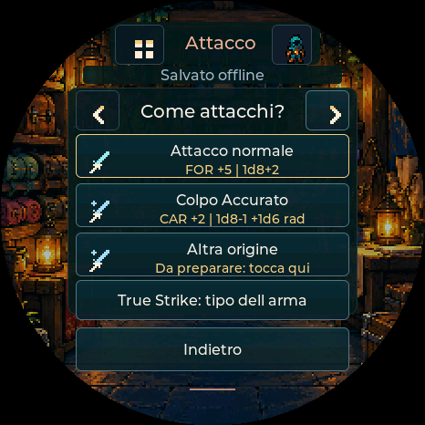
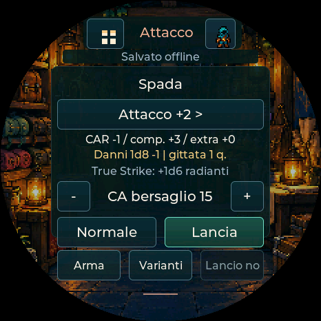
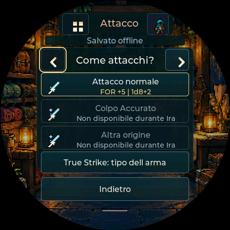
Oggetti e sintonia per tutti i PG · v0.86
Equipaggiato e sintonizzato sono stati distinti. Anteprima dei bonus a CA, caratteristiche, PF, armi, magie e tiri; modifiche salvate insieme, senza duplicare gli effetti importati. Profili permanenti riconciliati anche sui personaggi senza armatura.
Icone dedicate per anelli, mantelli, bastoni, stivali e amuleti. Requisiti di sintonia, effetti condizionali, resistenze e altre proprietà non rappresentate restano manuali.
Guida agli oggetti e alla sintonia. Aggiorna il firmware conservando il PG; per importare i nuovi profili di sintonia aggiorna anche l app PC. Le schede già presenti si possono configurare sul Pocket.
Catture del firmware su PC con oggetti sintetici. Prove su tutte le caratteristiche e livelli 1–20; nessun nuovo collaudo USB fisico implicito.
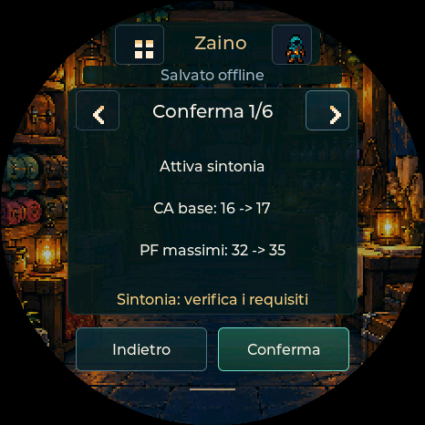
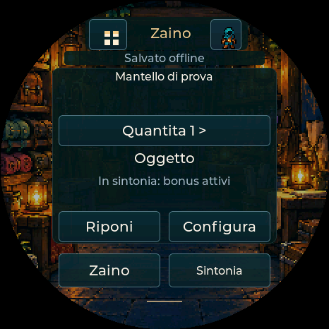
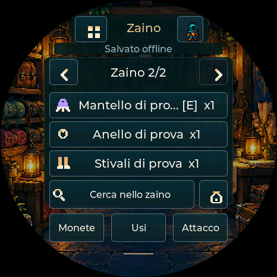
Magie e oggetti pronti sul Pocket · v0.85
Prepara una magia direttamente dalla scheda. Equipaggia o riponi armature e oggetti con anteprima di CA, caratteristiche, PF massimi e tiri collegati. Configura le armi già importate dal dispositivo.
True Strike 2024 usa la caratteristica da incantatore e tira arma più dadi radianti, anche su critico. Icone riconoscibili condivise e disponibilità visibile nelle liste. Gli effetti speciali non rappresentati restano manuali.
Guida equipaggiamento e True Strike. Aggiorna il firmware conservando il PG; per le nuove importazioni USB18 aggiorna anche l’app PC. Le schede esistenti si possono configurare sul Pocket senza reimportazione.
Catture del firmware su PC con dati sintetici. Lettura Beyond reale verificata separatamente; nuove interazioni da confermare sul dispositivo fisico.
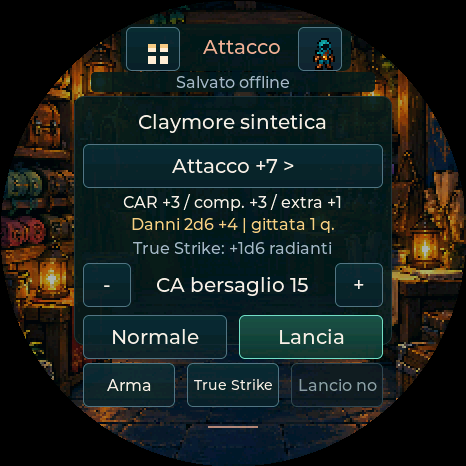
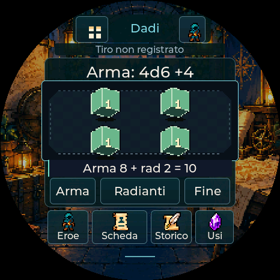
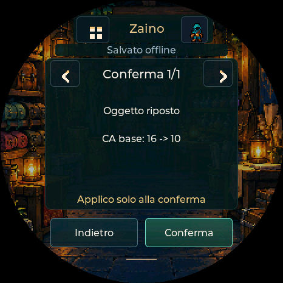
Dopo l’installazione
Attendi l’eroe sul display. Poi puoi trasferire la scheda dall’app PocketD-D per PC. L’installazione del firmware non importa il personaggio e non modifica la raccolta PC.
Se non si collega
- Prova un altro cavo USB dati e chiudi monitor seriali o altre schede dell’installer.
- Se la porta non compare, segui la procedura BOOT/RESET della tua revisione Waveshare; la porta può cambiare dopo il reset.
- Non scollegare il cavo durante la scrittura. Se viene interrotta, rientra nel bootloader e ripeti l’installazione.
- Firefox, Safari e i browser mobili non sono il percorso supportato. Un file HTML aperto direttamente non basta: usa il link HTTPS o l’avvio locale.
Inventario e difese · v0.71
Cariche separate dalle quantità, cure con formula esplicita e difese incondizionate riconciliate da Beyond. Gli altri tipi restano da verificare. Il profilo difese richiede firmware 0.71 / USB14; la conversione resta parziale.
Catture del firmware eseguito su PC con dati sintetici: anteprima prima della conferma e difese ricevute. Non attestano il trasferimento USB fisico.
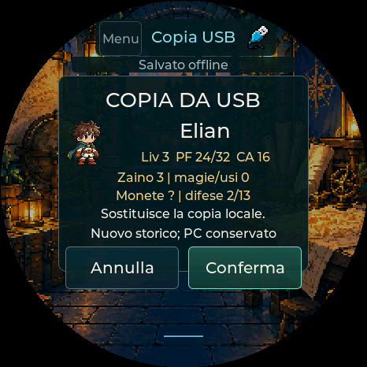
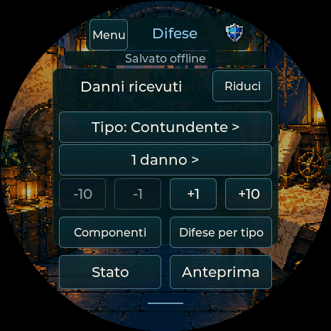
La caratteristica giusta per il tuo tiro · v0.74
Abilità con caratteristica personalizzata da Beyond o dall’editor PC fino al dispositivo. Per trasferire questa scelta occorre firmware 0.74. Competenza e bonus restano separati.
Intimidire con FOR: catture del renderer del firmware eseguito su PC con dati sintetici, non fotografie o prove USB fisiche.
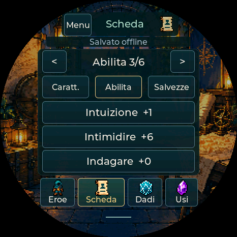
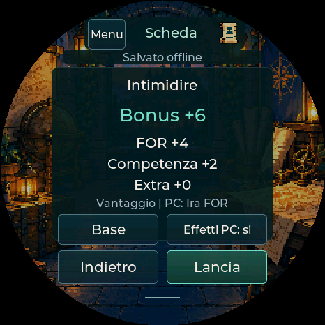
Difese pronte per il tavolo · v0.75
Danni → Difese per tipo → Completa: controlla i tipi mancanti e confermali Normali di base solo dopo verifica. Difese note, regole ed extra restano conservati. Configurazione rapida disponibile anche sul PC; nessuna deduzione automatica da Beyond.
Catture del renderer del firmware su PC con dati sintetici. Il trasferimento USB sul dispositivo resta da verificare.
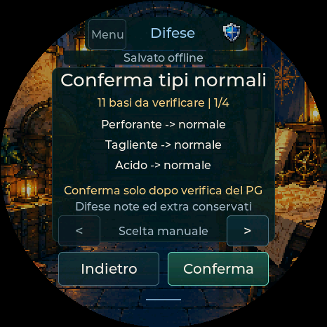
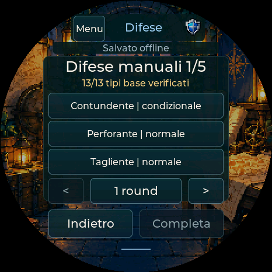
Contatori e capacità distinti · v0.76
I saldi manuali Beyond arrivano nei contatori del dispositivo, separati dagli utilizzi delle capacità. Correzioni esplicite, nessun consumo o recupero automatico. Testi negli estratti attuali.
Catture del firmware su PC con dati sintetici. Nuova lettura reale verificata separatamente nel report; trasferimento USB fisico ancora da collaudare.
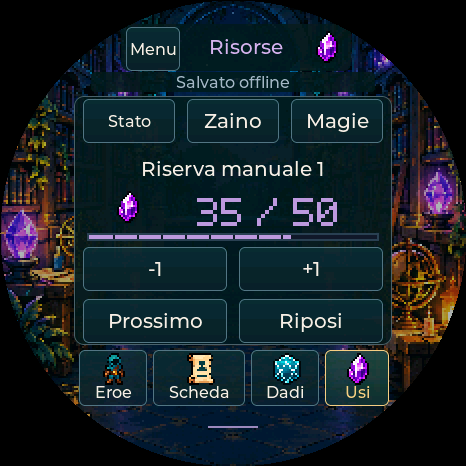
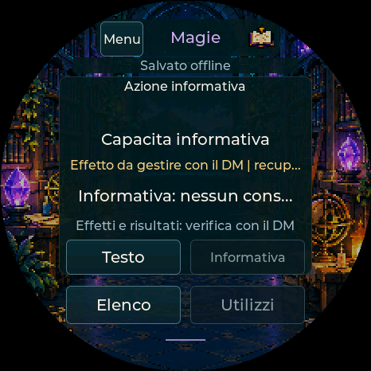
Creazione del cannone · v0.77
Per l’Artillerist riconosciuto di Tasha’s: una creazione gratuita per riposo lungo, poi uno slot ordinario o del patto scelto e confermato. Contatori manuali e concentrazione conservati. Aggiorna app e firmware a 0.77; una nuova importazione aggiunge il nuovo comportamento conservando le schede precedenti.
Catture del renderer del firmware su PC con dati sintetici. La nuova lettura reale e i limiti sono distinti nel report; USB fisico ancora da verificare.
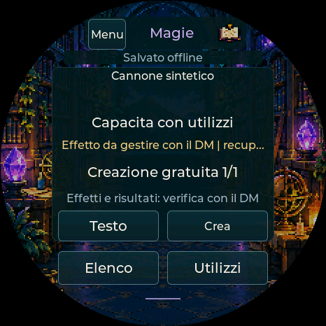
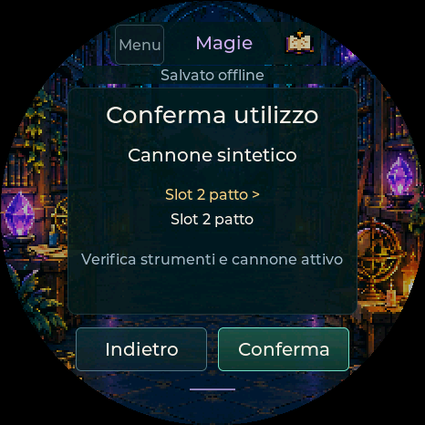
Profilo e Wi-Fi · v0.78
Scheda → Profilo PG: movimento, sensi/passivi, lingue, strumenti, dotazioni e iniziativa riconciliata. Le fotografie e i valori da verificare sono distinti dai comandi operativi. Reimporta da PC con app e firmware aggiornati; le altre schede restano conservate.
Firmware 0.84: Menu → ingranaggio → Wi-Fi → Cerca reti, scegli la rete e inserisci la password sul display. Configura da telefono / PC mantiene il portale temporaneo come alternativa e per abbinare il ponte. Le credenziali restano fuori dai backup del PG. La v0.79 aggiunge il ponte sperimentale descritto sotto.
Ambito Beyond v1 · Guida Wi-Fi · Progetto tempo reale
Queste catture provengono dal firmware eseguito su PC con dati di prova e password fittizia. Non attestano USB o Wi-Fi fisici, ancora da collaudare.
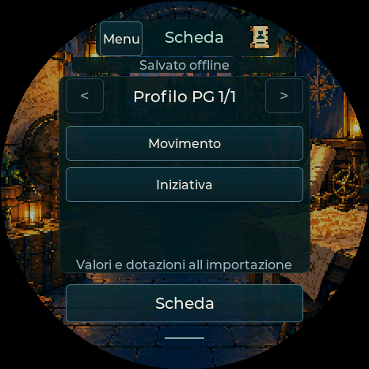
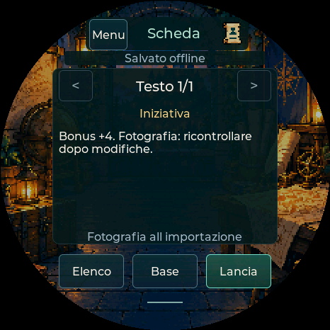
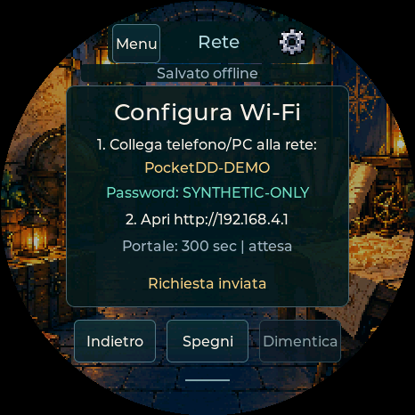
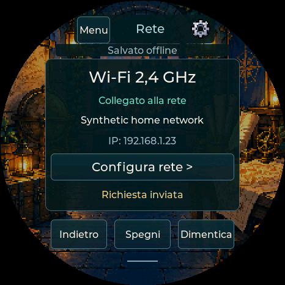
Ponte Beyond sperimentale · v0.79
Pocket → Wi-Fi → HTTPS sul PC → estensione Chrome/Edge → pagina Beyond. Stesse facce e totale dei tiri salvati; PF attuali e temporanei con verifica, conflitti visibili e nessun reinvio automatico dopo un esito incerto. Nessun requisito Foundry.
Nel pacchetto PC trovi Avvia-Ponte.cmd e la cartella extension. Leggi la guida di abbinamento e i limiti. I controlli software usano dati e pagine sintetiche: account Beyond, persistenza remota e radio ESP32 restano da collaudare. L utente riferisce risolti USB, installer e SD; le nuove funzioni e il ponte richiedono collaudo separato.
Più gioco, meno passaggi · v0.80
Arma e magie direttamente dalla home; Danni e Cura in prima riga. Icone coerenti con aiuto su pressione lunga, filtri Consumabili e Pronte, swipe nelle liste. I tasti configurabili e le conferme restano disponibili. Il PC segue tre passaggi: importa, verifica e trasferisci, conserva le copie.
Guida rapida al dispositivo. Catture del firmware su PC con dati sintetici: non fotografie o prove fisiche. Il collaudo del ponte reale resta separato; USB, installer e SD sono riferiti risolti dall utente.
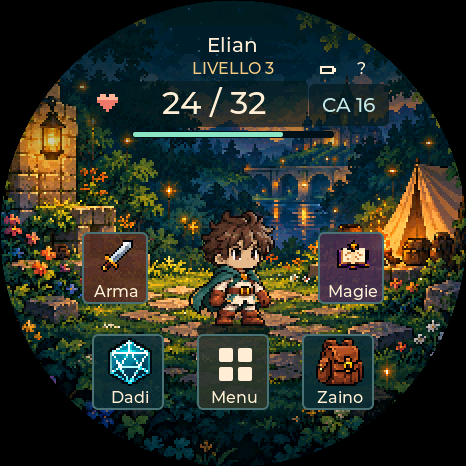
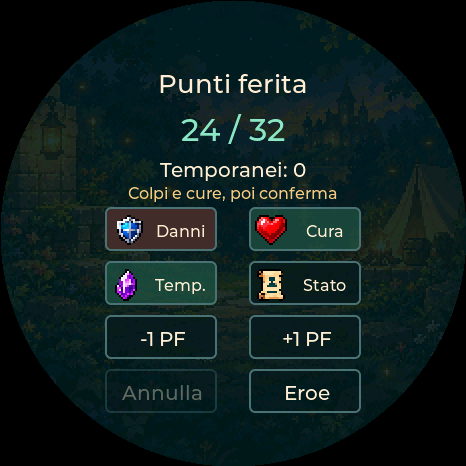
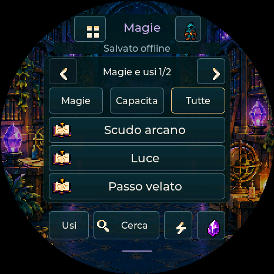
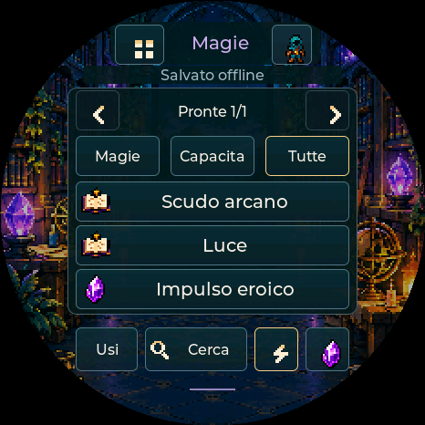